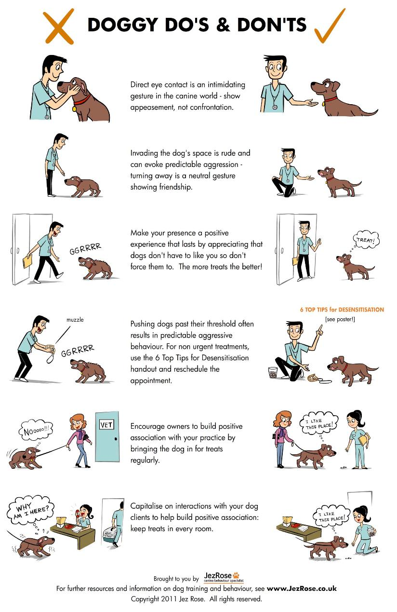
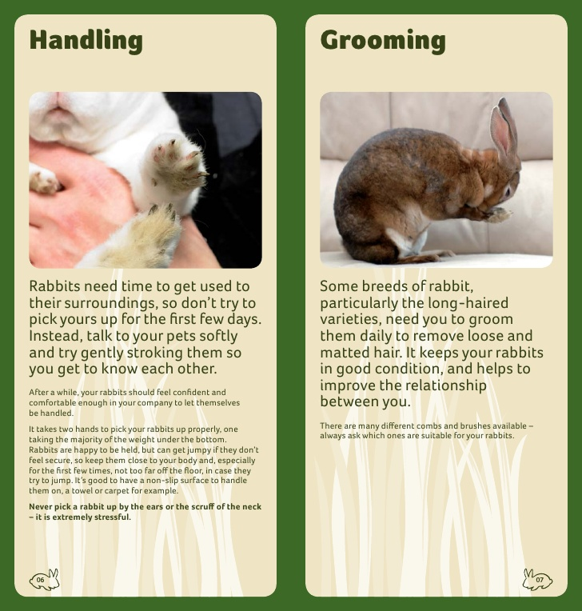

articles of interest
for your dog
TEN CANINE COMMANDMENTS
HOW TO GREET A DOG
for your rabbit
CARING FOR YOUR RABBIT
Rabbits are the third most popular pets in Ireland. However they do not need a licence, and many
vets are not aware of how to treat / vaccinate them effectively. Much of the housing sold for
rabbits is incredibly undersized and inadequate for your rabbit to live a happy, active and healthy
life. We are passionate about rabbits here, and hope you might learn a little from this page. Here’s
5 important points that you should know about your rabbit:
Five things to know about your rabbit:
1. Rabbits can live for up to 12 years2. Female Rabbits are always in heat and can have litters every 30 days from approx 4 months old
3. Rabbits can easily be litter trained and make perfect indoor pets
4. Rabbits should be vaccinated annually against 2 fatal, airborne diseases - VHD and Myxamatosis, which is one annual vaccinations costing approximately 45 euro
5. Rabbits are social animals and should be homed with people and other rabbits and have VERY distinct personalities
Handling your Rabbit:
Rabbits have a lightweight skeleton compared to most animals and their bones are easily fractured. If they struggle violently the rabbit may damage its spine, becoming paralysed in the hind legs, or even die of heart failure.However, it is quite easy to handle your rabbit in the right way. Pick up your rabbit by grasping the scruff of the neck gently with one hand and supporting its rump and hindquarters with your other hand.Never pick a rabbit up by its ears – they are very sensitive and easily damaged. To carry your rabbit tuck its head under your arm while still supporting its hindquarters. By handling your rabbit frequently in this way it will soon become tame and by talking gently, calling its name, it will soon respond to your voice.
If you are unsure, have your vet or a Last Hope Rabbit Expert show you the proper way to restrain and carry your rabbit.
Tips for kids:
- Don’t pull your rabbit’s ears.- Be gentle and your rabbit won’t become frightened.
- Keep your bunny away from other pets, especially dogs.
- Chasing games are stressful for your rabbit and it may escape or die of heart failure.
Further Information Online:
House Rabbit Society of the US http://www.rabbit.orgFantastic resource packed with information and stories from house rabbit owners
House Rabbit Network (US) http://www.rabbitnetwork.org
Great website with loads of bunny information
Rabbit Welfare Association (UK) http://www.rabbitwelfare.co.uk
UKs largest rabbit organisation for rabbit owners, with great information for house rabbits and outdoor bunnies
My House Rabbit http://www.myhouserabbit.com
Fantastic Personal Website and Blog on living with a house bunny
The Rabbit House http://www.therabbithouse.com
WHY DOES MY RABBIT...?
House Rabbit Behavior: Common Questions and Answers
In many instances, rabbits kept in hutches, pet stores, or laboratories do not receive enough stimulation or physical space to demonstrate their full behavioral repertoire. Owners of house rabbits know these are intelligent creatures with distinct personalities and a range of behaviors. Few individuals conform to the stereotypical “cute and cuddly” or passive and timid expectations of many. Thinking of acquiring a pet rabbit? Explore these common questions related to house rabbit behavior.My rabbit wants to chew on everything! Is this normal?
Chewing is a normal rabbit behavior. “Bunny proofing” your home is necessary to prevent destruction of property and to protect your house rabbit from harm. Provide your bunny with safe, fun chewing alternatives to keep her occupied and relieve boredom.What about digging?
Digging is another normal behavior that makes “bunny proofing” very necessary. In fact, the scientific name of the domestic rabbit is Oryctolagus cuniculus, which translates as “hare-like digger of underground passages”. Provision of items like “digging boxes” and long cardboard tubes can help to meet your rabbit’s instinctive need to dig.Why did my rabbit just eat her feces?
All small herbivores, including the rabbit, practice coprophagy or ingestion of feces. In many instances, you may not realize your rabbit is doing this as she may bend her head to access these nutrient-dense stools or “cecotropes” as they exit the anus. Rabbits must ingest their cecotropes or “night feces” to maintain adequate dietary protein and vitamin levels. Rabbits may also occasionally munch on dry fecal balls.Why does my rabbit defecate outside of the litter pan?
All rabbits will normally drop some fecal balls outside of the litter pan and around their cage to mark their territory. This is not failure to be litter-trained! This behavior is most intensely practiced by adult intact males, however even neutered rabbits mark new areas in this manner.Why did my rabbit start urinating outside of her litter pan?!
Loss of litter box training can indicate urinary tract disease so a small mammal veterinarian should evaluate your pet.Your rabbit may also feel the need to mark her territory by urinating outside of the pan after a stressful event. Anything that may make your house rabbit feel “insecure” like a new pet, houseguests, or change in cage location can cause her to mark territory more “enthusiastically”.
When rabbits reach 4-6 months of age, their reproductive hormones become active and they usually begin marking their territory. Spaying and neutering improves litter box habits and reduces territorial spraying.
Our young bunny is so hyper! Will she ever slow down?
Young rabbits are energetic and very curious. After 1 year of age most individuals become more sedate and predictable.How long will it take for reproductive behavior to cease after my rabbit is spayed or neutered?
Spaying and neutering improves litter box habits and reduces territorial aggression, mounting, and spraying. Many intact rabbits will also masturbate on inanimate, and animate, objects frequently and vigorously.After your pet is spayed or neutered, it usually takes about 2 weeks for sexual activity to begin to decrease. It generally takes 2 months for sexual activity to cease completely in most male rabbits.
The time frame may be as short as 2 weeks in females. (The end of sexual activity may take up to 4 months, and in rare instances up to 8 months, in large breed rabbits).
References and Recommended Reading:
Bays TB. Rabbit behavior. In: Bays TB, Lightfoot T, Mayer J (eds). Exotic Pet Behavior. St. Louis, MO: Saunders; 2006. Pp. 1-49.Checchi MJ. Are You the Pet for Me?: Choosing the Right Pet for Your Family. New York: St. Martin’s Press, 1999.
Davis SE, Demello M. Stories Rabbits Tell: A Natural and Cultural History of a Misunderstood Creature. New York: Lantern Books, 2006.
Harriman M. House Rabbit Handbook: How to Live with an Urban Rabbit, 3rd ed. Alameda: Drollery Press; 2005.
House Rabbit Society at http://www.rabbit.org/index.html accessed on Mar 30, 2011.
McBride A. Why Does My Rabbit...?, revised ed. London: Souvenir Press; 2003.
Quesenberry KE, Carpenter JW (eds). Ferrets, Rabbits and Rodents: Clinical Medicine and Surgery, 2nd ed. St. Louis, MO: Saunders; 2005.
HOW TO HANDLE A RABBIT
for your cat
CARING FOR YOUR CAT
Is a cat right for me?
Deciding to become an owner of a cat is not something that should be decided on the spur of the moment. Some thought should be put into the decision.Things to consider:
The Cost: Initially you will have to buy things like a litter box, scratching post, food bowls and other bits and pieces. Supplies of food and litter will need to be purchased regularly. There will be routine veterinarian costs for annual shots and check-ups and occasionally unplanned visits for illnesses or injuries.Owning the Cat vs. Being Owned by the Cat: Almost all cat owners would agree that there is no such thing as 'owning' a cat. The cat typically owns the 'owner'. They are loving and easy to care for pets but unlike dogs they do things in their own way and own time. For instance, you can train a cat to beg for a treat but if the cat doesn't feel like doing the trick at that moment, it won't. It's better to think of it as adding a new member to your family.
Easy Maintenance: Sure a cat is easy to take care of but it's not completely trouble free. You'll need to make sure the cat has plenty of water, food daily, and a clean litter box, as well as keeping up with the health exams. Although most cats do not demand tons of attention they will still want your affection on a regular basis. Take care of these basic things and you will have a companion for life.
Age of Children: If you have small children you may want to wait to get a cat until your children are older. Even if they are accustom to having a pet in the house the added stress on the new cat may be too much. However, if you will be supervising every encounter between small child and cat you'll probably be allright.
Other Pets in the House: If you already have existing pets in the house you'll need to consider if they will get along with a cat. Obvious problems would be birds and small rodents. Also, if you already have a cat and it has been a solitary pet for a long time, the transition of bringing in a new cat may be long and stressful. Generally gentle dogs will do fine with a new cat companion but if the dog is aggressive or territorial this could pose problems.
Potential Allergies: Does anyone in your household have pet allergies? If you have decided that a feline would fit perfectly into your family, there are still more things to consider...
Do you want a kitten or an adult cat? The attraction of tiny mewing kittens is hard to resist, but kittens need a lot of attention. On the plus side, kittens adapt quickly to their surroundings. For many people, an adult cat is a wise choice,
Do you want a male cat or a female cat? Both male and female felines can be equally playful and affectionate! Gender is based purely on personal preference!
You may be the perfect cat owner if you...
- Believe caring for a pet for 15 to 18 years does not seem like a lifetime.- Look forward to having your ankles rubbed by an affectionate, hairy animal.
- Don't mind sharing your house with someone who will never clean up after him or herself.
- Love a housemate who will randomly and regularly entertain you with outrageous and silly antics (at his whim, not yours).
- Want to take care of someone every day.
- Like your lap warmed whenever you sit down.
- Would like to spend your extra money on pet food, toys, veterinary care, kitty litter and more kitty litter.
- Want to be welcomed with a soft purr of appreciation.
- Believe that spaying and neutering pets will help solve the pet overpopulation problem.
- Can't imagine leaving your devoted pet behind when you move.
- Want to keep an ID tag on your pets, so they can always get back to you no matter what.
- Enjoy unconditional love and constant companionship.
Questions to ask before you get a cat
Can I afford a cat?
Cats require annual vaccinations, worming and flea treatment. Kittens need to be neutered at 12 weeks – all adult cats are neutered before Last Hope home them. Basic requirements for your cat – food, litter, litter tray, scratching post, toys, brush, cat carrier and collar.Do I have time for a cat?
Cats like to hang out with their humans and regular time should be set aside each day for play and cuddles. A fifteen minute play session twice a day is all that’s required to keep your kitty happy, and as many cuddles as you can give in between. Adult cats need a lot less time than kittens, who can be very energetic!Do I have space for a cat?
Yes, a cat’s world is vertical not horizontal, so if you can fit a climbing frame/cat tree into your home, you have room for a cat. Rule of thumb says, one room per cat. Apartments are ideal for indoor cats once you provide a climbing frame/cat tree, toys and some playtime. In fact, lots of people now believe it’s safer to keep a cat indoor-only because of outdoor hazards such as dogs, cars, poison and cruel humans .How clean are cats?
Cats are the cleanest of creatures, when problems arise it’s usually the human’s fault!! Cats instinctively bury their waste, when litter problems occur, it’s most likely because the litter tray is not clean enough. Vet’s advice should always be sought however as this can also be their way of letting us know something is wrong. Cats do shed so a few well-placed blankets are a must as they can be removed and cleaned easily. Also Velcro / lint brushes are an easy way of removing fur from furniture. Regular brushing is a great way of bonding with your cat and removing excess hair.Will my furniture be scratched?
It is natural for cats to scratch, it’s a way of them marking their territory and indeed, it’s a thing they have to do. However, there is no need for your furniture to be their scratching post. Provide your cat with an appropriate scratching post i.e. it must be tall enough to allow them to stretch to scratch with a solid base so it won’t fall over, and preferably covered in sisal (not carpet) so that they can shed their claws. If your cat is using the sofa, place the post at that spot so that they get used to using the post instead and gradually move it to the place you want it to be. Anti-scratching products are also available from pet shops.In general cats are very easy to live with, are low maintenance and extremely loving. They can fit into a busy lifestyle very easily, all they require is food, play and love. In return you will be rewarded with years of fun and kisses!!
BRINGING YOUR NEW KITTEN HOME
Things you will need
1. Litter tray and litter2. The tray should be scooped of waste twice a day and cleaned regularly
3. Scratching post (unless you want them to use your furniture!!)
4. Toys i.e. little mice, wand toys, feathers toys,
5. Bed/blanket.
6. It is best to feed them kitten food as it contains the nutrients growing kittens need – wet or dry is your own choice, but a combination may be best.
Making sure your new kitten is safe
1. Keep the toilet seat down (Kittens like to explore so make sure their environment is safe!)2. Check washing machines before you load them.
3. Take care of trailing electric cables.
4. Beware of open windows.
5. Some house plants are poisonous/check it out.
6. Open/electric fires, electric cooking hobs etc.
Training your kitten
NEVER hit or shout at your kitten, she won’t understand and it will only make her fearful. Clapping your hands or a firm ‘No’ will distract your kitten.1. Have a room ready with litter tray, food bowls, water and bed waiting for them.
2. Remember it’s a whole new experience for them.
3. Let your little kitten explore her room alone so that she becomes comfortable.
4. Join your kitten, sit on the floor with her and engage her in some play.
5. When she’s ready to explore the house, never leave her unattended with other pets or children.
6. Introduce your kitten to other family members gradually and likewise, other pets.
Grooming and care
All kittens need vaccinations at 12 weeks boosters are then required annually. Flea and worm treatments are recommended once a year. Introduce your kitten to gentle grooming with a soft brush, most kittens like this. Grooming should be done once a week and more often if the cat is long-haired to avoid the fur clumping. This can be a great way of bonding with your kitten. If putting a collar on your kitten, ensure it is a safety collar (with snap open fastener) and identity disc with the kitten’s name and your number.Neutering and microchipping
ALL kittens should be neutered at 4 months and kept indoors until this is done. We recommend you get your kitten microchipped at the same time.
Most of all, ENJOY your new family member!!